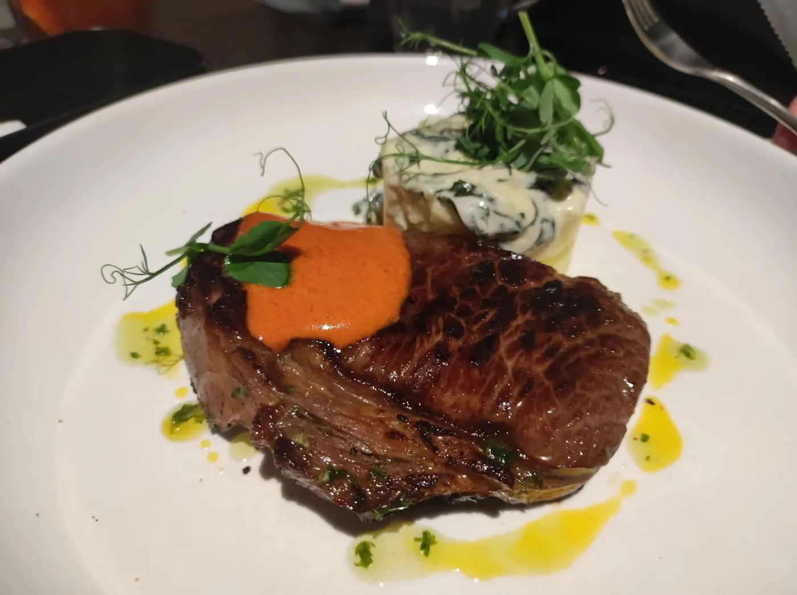
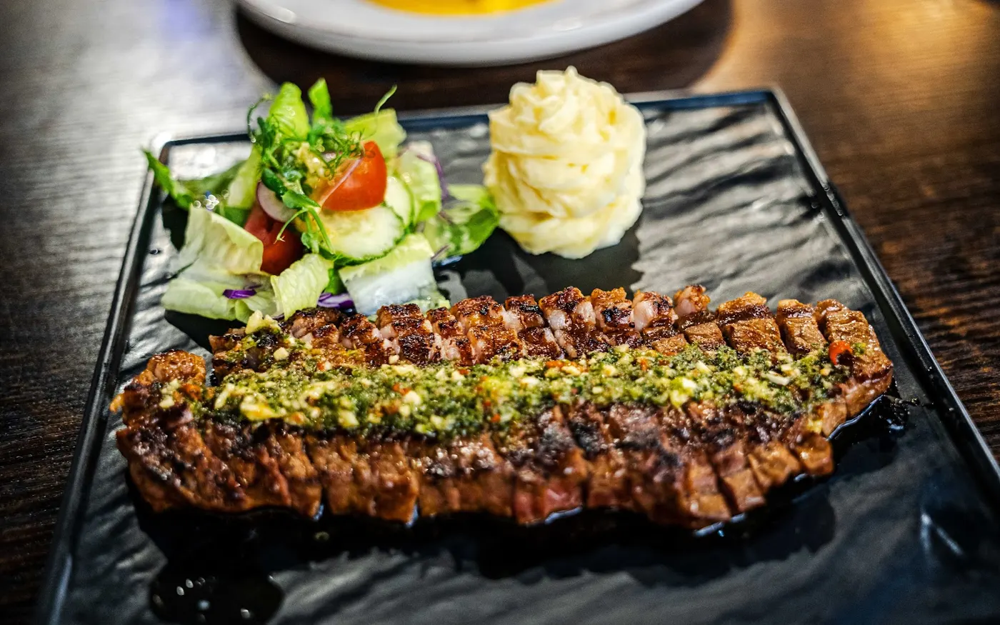
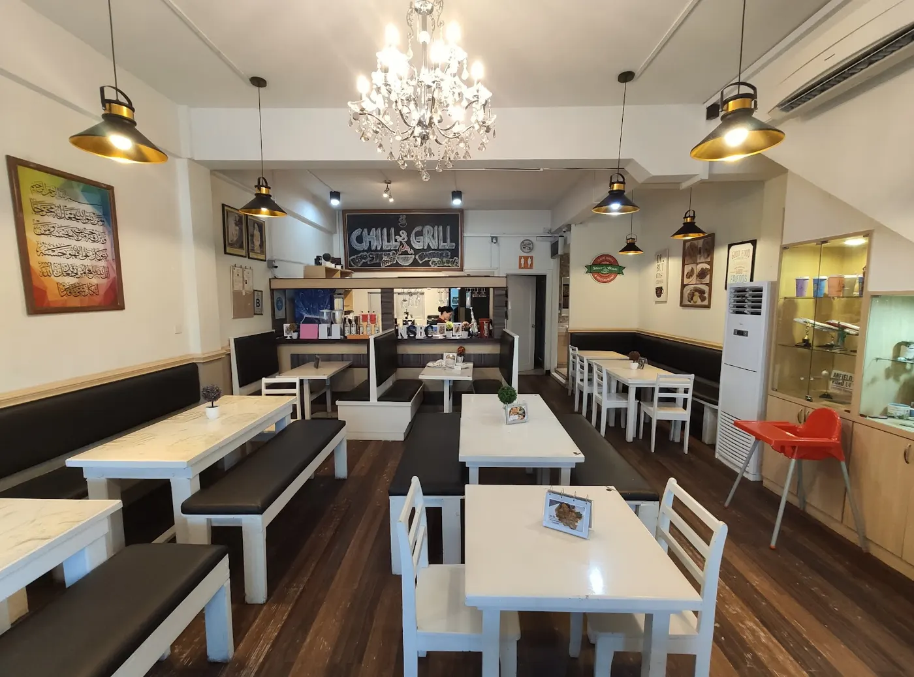
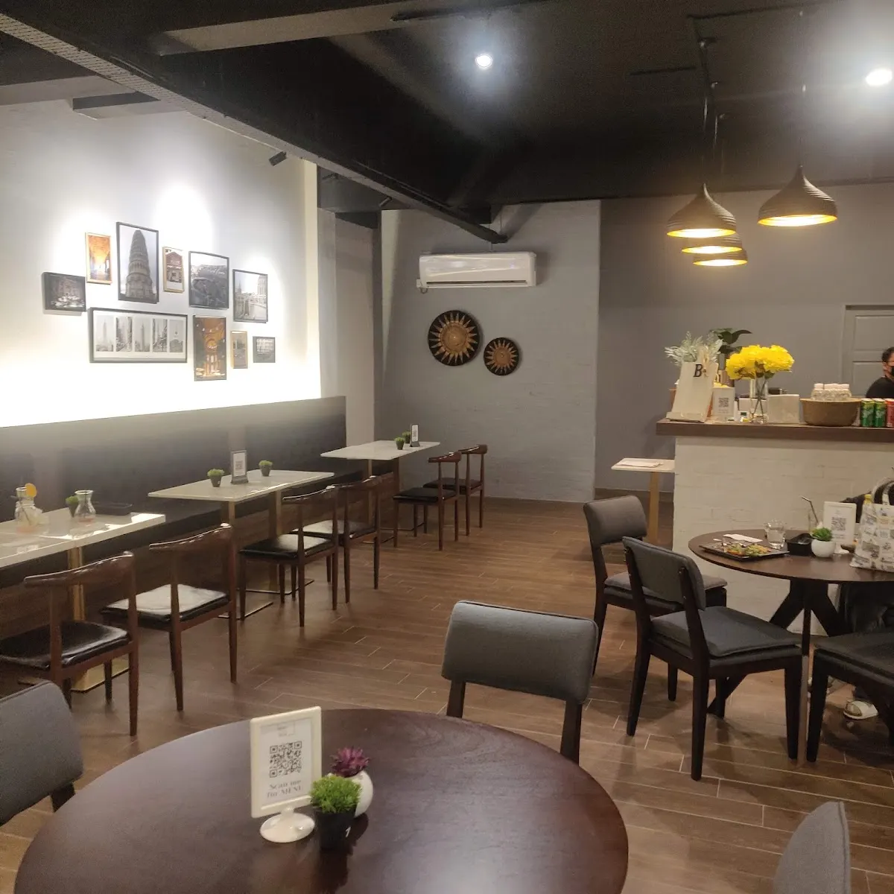
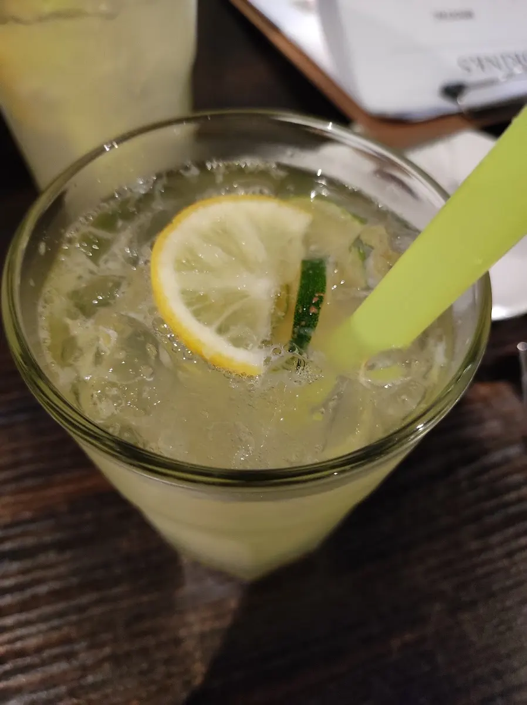

Crying Tiger Buttered Steak
House favourite, spicy Thai-style sauce.Kegemaran ramai, sos pedas gaya Thai.
Cafe & Grill · Kiulap
Grilled steaks, juicy chicken and creamy pastas at Yong Complex, Kiulap. From breakfast steak to a full dinner with friends.Stik bakar, ayam berjus dan pasta berkrim di Yong Complex, Kiulap. Dari stik sarapan hingga makan malam penuh bersama kawan.


SignatureIstimewaThe one to orderYang wajib dipesan
Butter-basted steak with our Crying Tiger sauce, a spicy Thai-style dip. Too spicy? Ask for the sauce on the side.Stik disiram mentega bersama sos Crying Tiger, cicah pedas gaya Thai. Terlalu pedas? Minta sos diasingkan.
“Tried their Crying Tiger Buttered Steak and I was sold. This restaurant has become my current go to steak place.”Book and try itTempah dan cuba
Sahira · Google
The spaceRuang kami



4.4 ★ · 69 Google reviews69 ulasan Google
“Tried their Crying Tiger Buttered Steak and I was sold. This restaurant has become my current go to steak place.”
“One word describes this place. Wholesome. … its portion is very generous. Very delicious I hope they keep this up.”
“One of the best cafes for western food! … ROSEMARY CHICKEN. The chicken thigh is super juicy and tender drenched in the heavenly creamy rosemary sauce.”
“This place has never disappointed me. It has kept its quality alive. Quantity for the price is amazing and tastes flavourful.”
ReserveTempahan
Busy at dinner and buka puasa. Book ahead, we confirm on WhatsApp.Sibuk waktu makan malam dan berbuka puasa. Tempah awal, kami sahkan melalui WhatsApp.